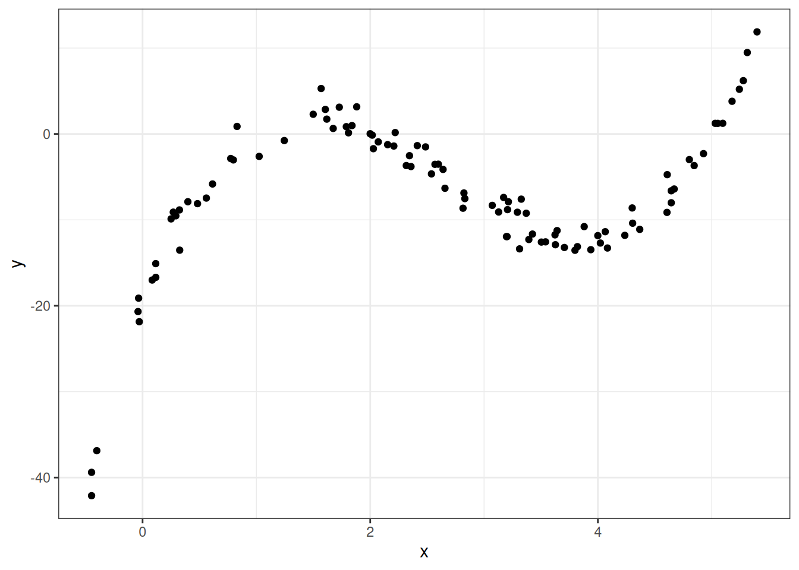

Evaluating and Improving Predictions
\(R^2\), Adding Predictors, Transformations, and Polynomials
The Ideas in Code
Inspect model output with the broom library
Consider the code we ran earlier to fit a linear model which can predict graduation rate using the poverty rate.
m1 <- lm(Graduates ~ Poverty, data = poverty)When you run this code, you’ll see a new object appear in your environment: m1. This new object, though, is not a vector or a data frame. It’s a much richer object called a list that stores all sorts of information about your linear model. You can click through the different part of m1 in your environment pane, or your can use functions from the broom package to extract the important components using code.
library(broom)
glance(m1)# A tibble: 1 × 12
r.squared adj.r.squared sigma statistic p.value df logLik AIC BIC
<dbl> <dbl> <dbl> <dbl> <dbl> <dbl> <dbl> <dbl> <dbl>
1 0.558 0.549 2.50 61.8 3.11e-10 1 -118. 242. 248.
# ℹ 3 more variables: deviance <dbl>, df.residual <int>, nobs <int>The glance() function returns a series of different metrics used to evaluate the quality of your model. First among those is r-squared. Because the output of glance() is just another data frame, we can extract just the r-squared column using select().
glance(m1) |>
select(r.squared)# A tibble: 1 × 1
r.squared
<dbl>
1 0.558Here’s the \(R^2\) we got earlier!
Fitting polynomials in R with poly()
In R, we can fit polynomials using the poly() function. Here is the code that was used to fit the polynomial earlier in the notes.
You do not need to worry about the meaning behind the raw = TRUE argument. The simulated data frame mentioned earlier is called df, and has two variables in it: predictor and response.
df <- df |>
mutate(predictor = x,
response = y)lm(formula = response ~ poly(x = predictor,
degree = 3,
raw = TRUE), data = df)
Call:
lm(formula = response ~ poly(x = predictor, degree = 3, raw = TRUE),
data = df)
Coefficients:
(Intercept)
-20.086
poly(x = predictor, degree = 3, raw = TRUE)1
34.669
poly(x = predictor, degree = 3, raw = TRUE)2
-16.352
poly(x = predictor, degree = 3, raw = TRUE)3
2.042 Making predictions on a new observation with predict()
We have spending a lot of time talking about how to fit a model meant for predicting, but have not actually done any predicting! The predict() function can help us do this. It takes in two main arguments:
object: This is the linear model object which contains the coefficients \(b_0\), …, \(b_p\). In the graduate and poverty example, this object wasm1. We hadm1throughm4in the ZAGAT example.newdata: This is a data frame containing the new observation(s). This data frame must at least contain each of the predictor variables used in the column, with a value of these variables for each observation.
Example: ZAGAT food rating
# A tibble: 168 × 6
restaurant price food decor service geo
<chr> <dbl> <dbl> <dbl> <dbl> <chr>
1 Daniella Ristorante 43 22 18 20 west
2 Tello's Ristorante 32 20 19 19 west
3 Biricchino 34 21 13 18 west
4 Bottino 41 20 20 17 west
5 Da Umberto 54 24 19 21 west
6 Le Madri 52 22 22 21 west
7 Le Zie 34 22 16 21 west
8 Pasticcio 34 20 18 21 east
9 Belluno 39 22 19 22 east
10 Cinque Terre 44 21 17 19 east
# ℹ 158 more rowsm2 <- lm(price ~ food + geo, data = zagat)Here, we will use m2 from the ZAGAT example. This model used \(food\) and \(geo\) in an attempt to predict price at a restaurant.
First, let’s make a new data frame with a couple of new, made-up observations.
restaurants <- data.frame(
food = c(25, 17),
geo = c("east", "west"))One of these restaurants is located in east Manhattan and has a food score of 25/30, while the other one is in west Manhattan and has a food score of 17/30.
Now, we can use this data frame alongside our m2 model object to make predictions for the prices.
predict(object = m2, newdata = restaurants) 1 2
55.89738 31.44043 We are predicted to have to pay roughly \(\$56\) at the first restaurant and roughly \(\$31\) at the second.
Summary
In this lecture we learned how to evaluate and improve out predictions. While there are many metrics to measure the explanatory power of a model, one of the most commonly used is \(R^2\), the proportion of the variability of the \(y\) that is explained by the model.
To improve our predictions - and increase the \(R^2\) - we saw three different strategies. If you have additional predictors in your data frame, its easy as pie to add them to your regression model and you are guaranteed to increase your \(R^2\).
A second strategy is capture non-linear structure by creating new variables that are simple transformations of the existing variable. The third approach, also targeting non-linear structure, is to replace a single predictor with a polynomial.